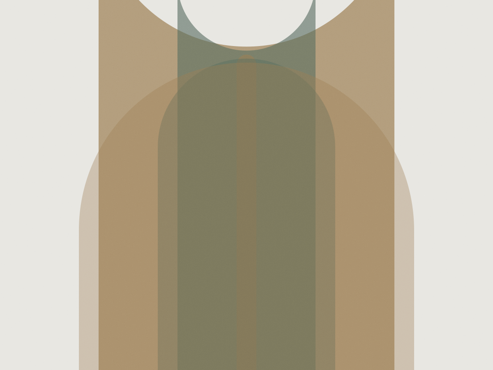
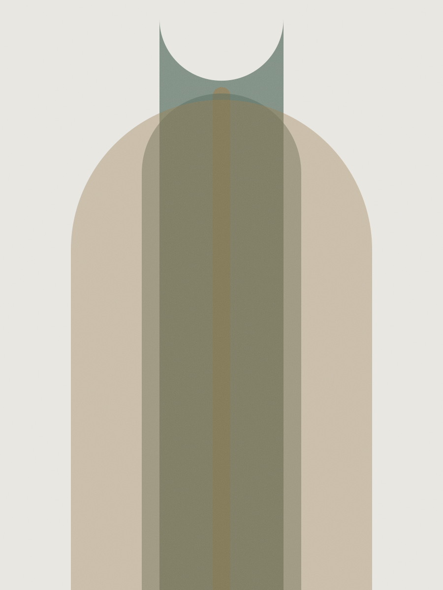
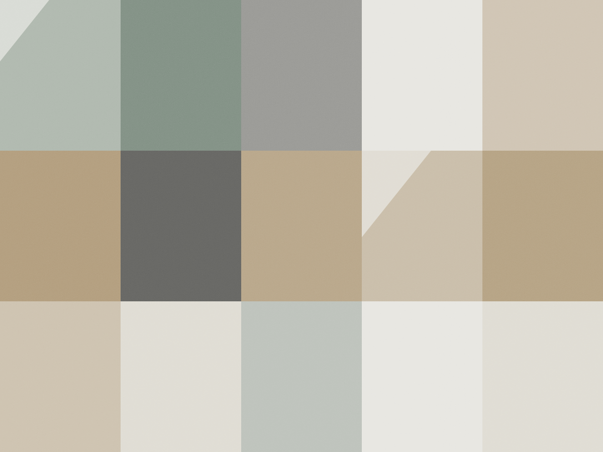

Arquitetura e urbanismo · São Paulo
A casa e o quarteirão na mesma prancheta
Trabalho em duas escalas e não separo as duas. O estudo de quadra me diz como o térreo funciona às sete da manhã; o projeto da casa me diz o que aquele térreo precisa ter para não virar muro.

Estudos urbanos
Trabalho contratado por escritório de arquitetura, associação de moradores e uma vez pela prefeitura. Sempre com o território e o período no cabeçalho — dado sem recorte não quer dizer nada.
-
2019 — 2021
Corredor Faria Lima
4,2 km e 11 quadras. Estudo de sombra das torres aprovadas e do que acontece no térreo entre 7h e 9h. O resultado foi um mapa de horário por quadra.
-
2022
Vila Anglo
Seis lotes de 8 m de frente. Testei três desenhos de fachada ativa para ver qual deles sobrevive ao recuo obrigatório sem virar garagem.
-
2023
Medeiros de Albuquerque
Uma quadra, duas calçadas e um problema de drenagem que aparecia em toda chuva de verão. O estudo mediu o escoamento antes e depois da intervenção.
Casas e reformas
Projeto completo, do estudo à obra. Duas entregas recentes, com metragem e ano — sem render que a obra não alcança.
-

Residência Ibirapuera
180 m² em terreno de 6 m de frente. A casa cresce para o fundo em três corpos, e cada corpo tem uma abertura voltada ao jardim — o corredor ficou com luz natural dos dois lados.
-

Reforma Vila Mariana
74 m² de apartamento anos 70. Derrubamos a parede da cozinha e mantivemos a esquadria original, restaurada em vez de trocada.
Três etapas, sempre nesta ordem
A etapa de leitura é a mais longa e a que quase ninguém contrata. É onde o projeto deixa de ser desenho e passa a responder a um lugar.
-
Leitura do território
Três visitas em horários diferentes, contagem de fluxo na calçada e registro fotográfico do que já existe. Sem proposta nesta fase.
-
Hipótese
Duas ou três partidas desenhadas à mão, com a sombra e o vento testados. É papel, não 3D — a discussão acontece antes da imagem bonita.
-
Projeto
Executivo, memorial e caderno de detalhes. Acompanho a obra em visita quinzenal e assino o que sai do combinado.
“Contratei o estudo de quadra sem saber o que esperar. Recebi um mapa de horário que usei em três projetos depois.”
“A Marina passou duas visitas só olhando antes de desenhar. Foi o que fez a casa ficar com janela onde a gente realmente queria.”
Ateliê
Trabalho com dois projetos por vez, e a agenda abre duas vezes por ano. Estudo urbano entra em qualquer época, porque não depende de obra.
- Endereço
- Rua Fidalga, 322 — Vila Madalena, São Paulo
- oi@marinatavares.arq.br
- Telefone
- (11) 97233-4108
- CAU
- A-214.882-1